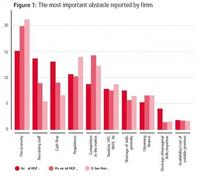
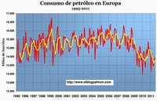
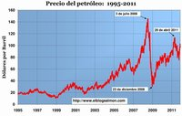
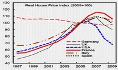
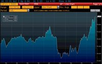
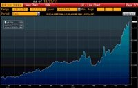
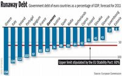
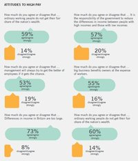
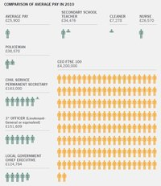

Marketing, entre el dolor y el analgésico
Sun, 27 Nov 2011 18:15:55 GMT
Aún recuerdo como si fuese ayer el consejo que un experto en ventas y negociaciones comerciales daba a su auditorio. Si quieres vender tienes que despertar el hambre, la insatisfacción, el dolor de levantarse por la noche y ver que la nevera esta vacia. Crea ese sentimiento. Y una vez que lo has generado, preséntate como la solución al mismo, como unas excelentes alitas de pollo para esa madrugada desapacible. Pasando del eterno debate sobre si el marketing crea o descubre necesidades, si eran reales o ficiticias, el ponente iba al hueso, no de la alita, si no del problema, del mecanismo que subyace tras toda compra, de como se sitúa lo comercial, el marketing, entre el dolor y el analgésico.
Me ha venido la memoria aquella reunión de hace más de una década al ver el spot de Bupa (conocida como Sanitas en España), una empresa que vende seguros médicos. Bupa busca despertar en el espectador la necesidad de encontrarse con ese otro yo más sano, de una manera tan cruel como intimista. Tremendamente más desasegante que la imagen de la nevera vacia. Seguro que les funciona.
En El Blog Salmón | El nuevo motor del marketing,

Los inquilinos mandan
Sat, 26 Nov 2011 19:00:18 GMT
Los arrendatarios últimamente tienen la sartén por el mango. Cada vez hay más familias que alquilan en vez de comprar, pero el aumento de la demanda no está suponiendo un incremento de los precios. Cada vez hay más oferta y aquellos que pueden alquilar no están necesariamente en una mejor situación económica que les permita pagar.
Los muchos años de sobreconstrucción han dejado un montón de viviendas vacías en las afueras, aunque la verdad es que las más demandadas están por zonas más céntricas de las grandes ciudades. No obstante, aunque estos estudios se están limitando a viviendas de familias, esta tendencia por lo que sé también se ve en las empresas.
Las empresas no se pueden permitir tan fácilmente tirar el dinero en oficinas demasiado lujosas en las zonas más caras, sino que se dan cuenta que para trabajar bastan espacios más modestos. Por lo que tengo entendido incluso dentro de las zonas de oficinas más caras los precios están bajando. Además, las grandes torres construidas en los últimos años se hacen competencia entre sí.
Así que si estamos de alquiler, tanto seamos una empresa como una persona particular, tal vez sea el momento de mudarse. La oferta es más amplia que antes y los propietarios están más desesperados que nunca por tener a alguien pagando una renta.
En El Blog Salmón | El roadshow inmobiliario de José Blanco
Vía | Finanzas.com
Imagen | Pablo F Butragueño
Derechos, deberes y baja maternal: algunas puntualizaciones sobre el caso Soraya
Fri, 25 Nov 2011 19:33:37 GMT

Mi post anterior sobre la baja maternal de Soraya Sáenz de Santamaría ha traído un debate bastante amplio fuera del propio blog. En la mayoría de los casos, las críticas que recibe el post anterior radican en la libertad de elección de la baja maternal, como una opción de Soraya y por extensión a cualquier madre y la segunda más fuerte, sobre el titular y la ausencia de la figura masculina en la crítica. En ambos casos, este artículo de El País recoge las principales polémicas al respecto y os recomiendo su lectura.
Antes de seguir con la exposición, me gustaría refrescar mi posición sobre las bajas maternales. Allá por septiembre del año 2009 señalaba claramente cómo la discriminación positiva para la mujer en las bajas maternales era y es un problema y que el camino real para evitarlos, es la igualdad efectiva entre los progenitores en las bajas maternales. Hoy por hoy, la legislación vigente discrimina de manera positiva a la mujer y de paso, obliga a seis semanas obligatorias en baja maternal a la madre desde la fecha del parto.
Partiendo de esta premisa, no admito en absoluto la crítica de Elena Gómez Pozuelo porque yo no hago la legislación y nunca puedo señalar al padre, dado que Soraya ha tenido que rechazar la baja maternal de facto y por tanto, su marido, si está al cuidado de su hijo no puede ser bajo la cobertura legal de la baja maternal. No sé donde trabaja este hombre ni si ha podido pedir una excedencia, pero haga lo que haga, no ha podido ser bajo una baja maternal.
En el segundo caso, se habla de la libertad de elección de la madre. Por supuesto, la madre (y el padre) es completamente libre de rechazar esa baja maternal y orientar su vida laboral y familiar como buenamente le parezca. Pero no es lo mismo la trabajadora Pepita López, que una persona pública como Soraya.
¿Por qué es importante esta imagen pública? Porque cuando una persona rechaza un derecho que sí tiene libertad para ejercerlo, puede generar un efecto en cadena de rechazo de derechos sobre las bajas maternales de aquellas personas que no tienen la libertad necesaria para desplegar esta opción. Es decir, Soraya sí toma libremente la decisión de incorporarse al trabajo pero una trabajadora cualquiera, puede verse fuertemente coaccionada por la empresa para que rechace dicha baja maternal y se incorpore cuanto antes a su puesto de trabajo, más aún si trabaja en una pyme.
Y no, no puede tener nunca libertad de decisión para rechazar derechos laborales un trabajador sin cualificación o un trabajador cualquiera en un país con 5 millones de parados que persona como Soraya. De ahí que yo le haya pedido a nuestros representantes públicos imagen alineada con los intereses de la mayoría, en este caso las mujeres y su relación laboral en las empresas.
Por último, he visto también críticas por ahí que hacen hincapié a la situación económica en España y que Soraya es imprescindible dentro del esquema del Partido Popular. Craso error porque en todas las organizaciones empresariales, económicas o sociales, todo el mundo es necesario pero nadie imprescindible. Nos hace falta un poco de humildad en este punto porque siempre podemos encontrar otra persona que desempeñe nuestro trabajo mucho mejor que nosotros mismos.
Concluyendo y ya que se ha abierto un debate importante sobre este tema, yo lanzo el siguiente órdago al Gobierno. Cree una baja maternal en la que de entrada cada progenitor pueda tomarse como mucho ocho semanas y que no haya posibilidad de cesión de tiempo de uno a otro. ¿Esa es la igualdad que se pide no? Pues vamos a por ella con todas sus consecuencias.
En El Blog Salmón | Soraya Sáenz de Santamaría no es el ejemplo a seguir por la mujer española
Alfredo Sáenz vs Enric Durán: del indulto del primero a la cárcel para el segundo
Fri, 25 Nov 2011 15:42:37 GMT
El último Consejo de Ministros de Zapatero ha firmado el indulto a Alfredo Sáenz, indulto que ya se esperaba y que se ha llevado a cabo con la connivencia del Partido Popular. Este indulto, contradice incluso las directrices jurídicas del Tribunal Supremo, dado que no se observan en caso del Sr Sáenz, motivos para el indulto, según dice la máxima instancia jurídica del país. El Banco Santander ha desplegado todo su poder y ha conseguido que en plena crisis, los banqueros salgan con las manos limpias incluso después de ser condenados. Se confirma que la justicia en este país se mide en baremos de subjetividad y no de igualdad y que el poder abre las puertas de la cárcel con una simple llamada de teléfono.
A la par que me he enterado de este indulto, no he podido nada más que acordarme del caso de Enric Durán, el Robín Hood de los bancos, cuyo juicio arrancó hace pocos días en Barcelona. La fiscalia está pidiendo 8 años de prisión para Durán y una indemnización para las entidades financieras de 200.000 euros. Este hombre, se aprovechó de las lagunas del sistema, pidió préstamos por importe de más de 400.000 euros con la intención de no pagarlos y repartió el dinero entre distintas ONGs. Como vemos, el caso de Saenz, existió falsedad documental y querella falsa y por su propio delito, cuatro inocentes estuvieron varios meses en la cárcel. El banquero sale con las manos limpias y podrá seguir al frente de una de las mayores entidades financieras del mundo, a pesar de no tener ni honorabilidad ni los requisitos exigidos para desempeñar la profesión de banquero, porque el recurso planteado al Constitucional, llegará tarde y ya podemos predecir su fallo. En el caso de Durán, que el karma y la diosa fortuna le sea favorable porque lo tiene muy jodido.
El caso de Durán es un caso en el que se debería condenar al Banco de España y a las entidades financieras por dejadez en sus funciones. Sí, dejadez porque el propio Banco de España tiene una base de datos en la que todas las entidades financieras anotan los préstamos concedidos a sus clientes por importe superior a los 6.000 euros. El registro de la CIRBE (Central de información de riesgos del Banco de España) es la base de datos que suministra esta información ¿Dónde está el problema real?
Sencillo, dado que en pleno siglo XXI y con la tecnología que todos tenemos al alcance, esta base de datos tiene unos plazos de actualización que oscilan entre uno y los cuatro meses desde la fecha de concesión del préstamo. Hoy día, estos plazos son impensables y aunque la solicitud del crédito debe ser responsable y razonable, si te roban en la empresa porque te dejas, probablemente te lo merezcas, que es ni más ni menos lo que le ha pasado a este grupo de entidades financieras que han sentado en el banquillo a Durán.
A efectos jurídicos, Enric Durán lo tiene realmente complicado, porque este hombre es un ciudadano de a pie que ha señalado una deficiencia grave del sistema financiero español cometiendo en teoría el delito de estafa y que probablemente sea acusado como culpable y no pueda siquiera pagarse una buena defensa. Sáenz tiene dinero, contactos e influencia suficiente para que un Consejo de Ministros moribundo cierre la legislatura con un regalo de primer nivel. Esta es la igualdad de la justicia que tenemos en nuestro país si hablamos de delitos financieros. Depende de tu poder y dinero para que te condenen e indulten o para que termines en la cárcel.
En El Blog Salmón | Banco Santander y Alfredo Saenz piden clemencia a San Zapatero con la mediación del Rey, El Banco de España tiene que decidir sobre el caso Sáenz al frente del Santander
¿Saben ellos lo que nos cuestan?
Fri, 25 Nov 2011 10:00:53 GMT
Circula por las redes sociales la imagen que encabeza el post, una carta de un lector al diario “El País” en la que como véis sugiere que a nuestros mandatarios se les muestren las facturas de lo que nos cuestan sus distintas actividades, ordinarias o extraordinarias.
Sin duda sería una buena medida, todavía colea la anécdota de nuestro presidente en funciones cuando se le preguntó por el precio de un café. Y es que nuestros representantes no parecen ser del todo conscientes de la realidad que rodea al ciudadano de a pie. Además de las sugerencias del lector de El País, voy a sugerir yo un listado de esos gastos sobre los que se debería pasar factura “informativa”, y como seguro que alguno se me queda en el tintero, tenéis los comentarios para añadir también vuestras sugerencias.
Las facturas “informativas” que les haría llegar yo a nuestros representantes serían entre otras:
- Telefonía y ADSL.
- Electricidad de sus despachos y sedes con la luz y los ordenadores encendidos aún cuando no hay nadie usándolos.
- Calefacción y aire acondicionado de los enormes edificios públicos.
- Agua y saneamiento.
- Combustible de los vehículos oficiales.
- Limpieza y mantenimiento de vehículos e instalaciones.
- Salarios de todos sus “asesores” asignados a dedo.
- Papel, fotocopias y material fungible de oficina. (Como decía el chiste, esos documentos que no se sabe muy bien de que son puedes tirarlos, pero antes sácales una fotocopia y archívala “por si acaso”)
- Dietas y gastos con tarjetas “de crédito”.
- Canapés y actos de autopromoción.
- Publicidad institucional de autobombo para contarnos lo bien que están haciendo las cosas (si no es evidente a simple vista y necesitan publicitarlo, mal asunto)
- y de momento no se me ocurren más, pero seguro que a vosotros sí, os animo a participar.
Tal vez si fuesen más conscientes de lo que nos cuestan a todos sus cosas, tratarían de ser más contenidos en el gasto (o no).
En El Blog Salmón | Facturas en la sombra, copagos y genéricos: ¿servirán de algo?
Imagen | Facebook
Recuerdan a Merkel que no está inmune y que la primera clase del Titanic también naufragó
Fri, 25 Nov 2011 05:30:46 GMT
Fue el ex-ministro italiano de finanzas, Giulio Tremonti, el que comparó a Alemania con la primera clase del Titanic, para recordar a Angela Merkel que la primera clase del Titanic también naufragó junto a todo el resto de la tripulación aquella fatídica noche de 1912. Al centenario de este hecho, la anécdota no es nada trivial si consideramos que es precisamente Angela Merkel, la que está hundiendo a Europa, algo que fue expresado en julio por el ex-canciller Helmut Kohl. Y ahora que la crisis ha golpeado a Alemania con una decepcionante subasta de bonos, se hace patente que hasta con la economía de Alemania, la confianza se ha derrumbado.
Esto confirma que la situación económica de la zona euro sigue empeorando, dado que sus mandamases se han limitado a ganar tiempo, pateando una y otra vez el problema por el despeñadero, y sin agilizar las soluciones reales a la crisis. El mensaje que envió Tremonti, en una acción que desató la furia de Merkel y tras la cual apuró la caída de Berlusconi, no hacía más que plantear la metafora en la cual italianos, griegos, españoles o irlandeses están en el mismo barco con los problemas del euro. Todos estos países tienen un gran problema monetario al ser incapaces de financiar sus déficit, en una escalada que solo los hunde más en el abismo de la depresión y el estancamiento.
Prueba de ello es la caída continua de los índices de producción industrial para los países europeos, que llegó a 47.3 puntos en octubre, el nivel más bajo desde junio de 2009. Y nada hace pensar que ese índice pueda remontar dado que se ha entrado en la peligrosa espiral donde el desempleo se tornó incontrolable (se estima que para España alcanzará el 27% durante el próximo año, con casi 6 millones de desempleados).
Para comprender este descalabro solo hay que aplicar la triste aritmética de los planes de austeridad y los recortes presupuestarios, realizados con motosierra y sin ningún criterio. Han sido esos recortes los que han hundido la demanda provocando el hundimiento de la producción industrial (ver gráfica) que a su vez provocará más despidos y nuevas caídas productivas, en lo que hemos denominado la espiral de la muerte que se alimenta también de las continuas caídas en el sector privado.
El objetivo de la implantación de los caminos de austeridad, busca reducir los costes a través de los recortes salariales y el nivel de vida (la llamada “devaluación interna”), para provocar una deflación del ingreso interno. Se busca que los salarios sean fuertemente presionados a la baja para hacer más competitivos los productos de exportación, y así aumentar las exportaciones mientras se reducen las importaciones al pasar a ser más costosas en términos de precios relativos. Es decir, que por la vía de la superexplotación del trabajo se pretende revertir el déficit de cuenta corriente de la balanza de pagos. Esta es la clásica receta aplicada por la doctrina más ortodoxa del pensamiento económico que no toma en cuenta el sufrimiento humano y la disparidad del ingreso que generan las clases rentistas. En otras palabras, lo que espera a Europa es algo muy parecido a la esclavitud, con la salvedad de que pensábamos que este régimen había sido abolido hace 200 años.
En El Blog Salmón | Duro informe del FMI: Alemania es la oveja negra de la Unión Europea, Así se hunde la economía mundial
Imágenes | Stinkie Pinkie, EuroStat
En Naranja, nuevo blog de empresa para ING DIRECT
Thu, 24 Nov 2011 09:00:16 GMT
Hoy en WeblogsSL comenzamos un nuevo proyecto de empresa, dedicado al ámbito económico y desarrollado para ING DIRECT. En Naranja es una publicación dedicada a aquellos interesados por la economía, por el ahorro y por conseguir el máximo partido a su dinero, pero que no son expertos en la materia. Un blog dedicado a todos aquellos que hacen lo que su lema: “ahorrando voy, ahorrando vengo”
Apuesta por el consumo inteligente, se pregunta qué hay de cierto en mitos económicos (como si compensa viajar en low cost o si una subida de sueldo puede hacer que cobres menos), divulga la función de instituciones financieras importantes (como el CIRBE) o cómo conseguir el máximo ahorro en aspectos de nuestra vida de los que no podemos prescindir, como la vivienda. Por eso pensamos que puede ser muy interesante para los lectores de El Blog Salmón.
Es una publicación que, como no podía ser de otra manera, también busca que “desaprendamos” qué es la economía y que se ajusta al Manifiesto del Fresh Banking con el que ING DIRECT se compromete con sus clientes.
Sitio oficial | En Naranja
Cómo ayudar a tus empleados a ser más sostenibles en la empresa
Wed, 23 Nov 2011 15:00:28 GMT
Hace unas semanas hablé de la importancia de que las empresas establezcan un modelo de sostenibilidad que no sólo exista, pero que sea efectivo y creíble para todas las partes interesadas de la empresa, los stakeholders.
Los trabajadores son la pieza fundamental en asegurar que los objetivos de la empresa se cumplan y en temas de sostenibilidad y responsabilidad social, es crucial que vean el compromiso real de la empresa. Un compromiso sólo para la galería puede que engañe a los actores externos durante algún tiempo pero no será posible engañar a los empleados de la falta de compromiso de la empresa si este compromiso no es real.
Por eso la empresa debe tener una política clara y también debe comunicar esta a sus trabajadores de forma efectiva. El artículo vinculado nos da una lista de formas de mantener informados a los trabajadores para que estén al día de los programas y las políticas de la empresa, que son los siguientes:
- Llega a los empleados donde estén, en las salas de reuniones, de conferencias, de descanso, los lavabos, los aparcamientos y en la web.
- Integrar la sostenibilidad dentro del desarrollo de la carrera.
- Demuéstrales el progreso de la empresa.
- Utiliza la tecnología con efectividad y apropiadamente.
- Alinear todos los mensajes de la estrategia de comunicación; la comunicación con los empleados, las relaciones públicas y la publicidad, asegurando un mensaje consistente, tanto dentro como fuera de la empresa.
- Inspira competencia entre empresas del grupo, incluso entre departamentos, mide progreso y motiva la consecución de más éxitos.
- Proporcionar incentivos significativos para incentivar el interés, la participación y la comunicación.
- Reconoce el compromiso y la creatividad.
- Reconoce los mensajeros claves y los líderes intelectuales del proceso.
- Hacerlo divertido, social y siempre agradecerlo.
Es responsabilidad de los directivos asegurar que lo hacen bien y que los trabajadores lo crean. ¿Qué os parece, lo hacen bien vuestras empresas y, haciéndolo bien, lo comunican como es debido internamente y externamente?
Vía | Greenbiz (en inglés)
En El Blog Salmón | Un modelo de sostenibilidad para las empresas
¿Qué es el seguro decenal?
Wed, 23 Nov 2011 06:00:04 GMT
Esta semana, en nuestra serie de Conceptos de Economía, vamos a centrarnos en el sector inmobiliario, y más específicamente en el sector residencial, en la vivienda. Y todo ello para tocar un tema que sin duda dará que hablar en el futuro, habida cuenta de las liquidaciones de promotoras inmobiliarias y de los métodos cuestionables de edificación de algunas de ellas que, sin duda, traerán consecuencias en el futuro. Es por ello que tratamos de responder a una pregunta clave al respecto: ¿qué es el seguro decenal?
El seguro decenal abre numerosos interrogantes para aquellos que no están familiarizados con este mundo: qué riesgos cubre, su obligatoriedad y las excepciones a la misma, las consecuencias de su ausencia, la necesidad de una OCT, la problemática propia del sector, etc. Trataremos de tocar todas ellas, así como dejaros algunos links interesantes para profundizar en el tema.
¿Que riesgos cubre el seguro decenal?
Antes de 1.999, nuestro Código Civil ya establecía una garantía decenal ante casos de “ruina” en la edificación para contratistas y arquitectos. Sin entrar en el análisis de aquel marco legal lo cierto es que muchas veces su cumplimiento era imposible, habida cuenta de la ausencia de patrimonio de los obligados a responder. Esta problemática, especialmente dolorosa en los supuestos de viviendas, y solo parcialmente subsanada por los seguros de responsabilidad civil que algunos profesionales o promotores tenían, era lo que la Ley 38/1999, de 5 de noviembre, de Ordenación de la Edificación. entre otros temas, intentaba subsanar.
Para ello, en su articulo 19, establece tres plazos para exigir responsabilidades de los agentes (promotor,constructor,arquitectos, etc) que intervienen en la edificación, en función del tipo daños/vicios:
-
Diez años para los daños causados por vicios o defectos que afecten a la cimentación, los soportes, las vigas, los forjados, etc que comprometan la resistencia mecánica y estabilidad del edificio.
-
Tres años para los vicios o defectos de los elementos constructivos o de las instalaciones que ocasionen el incumplimiento de los requisitos de habitabilidad.
-
Un año para los daños que se produzcan en los elementos de acabado o de terminación de la obra.
El caso es que, si bien para todos ellos se establecía la posibilidad de contratar seguros para cubrir dichas responsabilidades, inicialmente y por el momento, sólo se ha fijado la obligatoriedad legal del que cubre dicha garantía decenal en los supuestos de edificación de viviendas. Hoy por hoy el seguro decenal es áquel que garantiza las responsabilidades de los agentes de la edificación por daños materiales causados por defectos o vicios que afecten a la resistencia mecánica o estabilidad del edificio. Y nada más. El seguro decenal no cubre legalmente otro tipo de riesgos, no es una suerte de seguro multirriesgo que cubra a los compradores de un promotor que incumple sus obligaciones
¿Es obligatorio el seguro decenal?
La Ley fija su obligatoriedad para edificios cuyo destino principal sea el de vivienda. ¿Y cómo hace efectiva dicha obligación? Sencillo, no permite la inscripción de la obra nueva en el Registro de la Propiedad, lo que, en la practica imposibilita al promotor obtener la financiación hipotecaria, comercializar las viviendas, etc. Si el promotor no acude ante el Notario con dicho seguro no tiene nada que hacer, quedando fuera del Registro de la Propiedad hasta que pasen esos 10 años. Claro que, como todo en la vida hay excepciones, que en este caso se marcaron a posteriori.
Y es que, cuando la Ley sale en el 99, hay numerosas quejas por parte de los autopromotores, por parte de aquellos que se construyen su propia vivienda para habitarla. Muchos entienden que no tiene sentido la obligacion de asegurarse a ellos mismos, e incluso la Dirección General de Registros y Notariado se puso de su parte, lo que llevo a una modificación legal en el 2002, declarando que no será exigible en el supuesto del autopromotor individual de una única vivienda unifamiliar para uso propio.
Esta excepción planteaba un problema, ya que puede ocurrir que esa vivienda, sin seguro decenal, sea transmitida en un plazo inferior a los 10 años, y ese tercero no este adecuadamente protegido. Por eso la Ley obliga al autopromotor-vendedor, salvo pacto en contrario, a contratar la garantía a que se refiere el apartado anterior por el tiempo que reste para completar los diez años, lo que no es tan sencillo como luego veremos a raíz de la OCT.
¿Qué es la OCT?
Las siglas OCT son las Oficinas de Control Técnico, y para definirlas me remito al experto Carlos Lluch en un excelente post: empresas de ingeniería y/o arquitectura que tienen por misión el control de la calidad del proyecto, de la ejecución material del proceso de edificación, la correcta sujeción de la obra al proyecto y la adecuación a la normativa aplicable….Las OCT vienen obligadas no solo a revisar e informar el aspecto documental de la obra (Proyecto de Ejecución Material, Planos, etc) sino que también deberán asistir a ciertos momentos críticos del proceso constructivo para poder dar fe de que cierto acto ha tenido lugar y de la calidad con que se ha ejecutado. Parece lógica su necesidad, como tercero supervisor, habida cuenta del tipo de vicios que se cubren con el seguro decenal.
Son por tanto técnicos, pagados por el promotor, que dan soporte a la Compañía de Seguros para que esta pueda emitir el seguro. De hecho, la inmensa mayoría de las mismas (y de hecho en el ramo, como veremos, no son muchas) sólo admiten riesgos si la obra esta supervisada por una OCT, cosa que a muchos promotores les parece un sobrecoste innecesario (opinión esta de la cual yo discrepo).
Ahora bien, cabe la posibilidad de contratar seguros decenales sin OCT. Es más, en algunos caso dicha OCT es imposible de llevar a cabo, ya que nos encontramos ante edificios terminados y los técnicos no han podido supervisar el proceso de edificación en puntos críticos. Lo que ocurres es que pocas compañías están dispuestas asumir estos riesgos y, lógicamente, las primas son superiores, pero haberlas haylas.
Seguro Decenal: luces y sombras
Termino esta entrada sobre el seguro decenal con tres puntos que creo no conviene olvidar:
- Hay dudas acerca de la competencia en el ramo. He señalado que no hay multitud de compañías dedicadas al tema, lo que puede haber favorecido el expediente sancionador que, por 120 millones de euros, le impuso la CNC a 6 compañías en el 2009 por acordar la fijación de precios mínimos, frente a la opinión de UNESPA de que lo que primaba eran criterios técnicos. Me pregunto si la crisis inmobiliaria y los nuevos marcos regulatorios financieros ayudarán a fomentar la competencia o más bien todo lo contrario.
- Algunos pensarán que lo que debe primar es la entrada de compañias extranjeras que fomenten dicha competencia, usando los llamados pasaportes comunitarios. Ojo que nos podemos encontrar con compañías extranjeras cuyas regulaciones o supervisiones sean mucho más laxas que la española y puedan tener problemas el día de mañana para atender sus compromisos. Claro que, si nos queremos asustar, pensemos en la posibilidad de que surjan falsas compañías a lo shellbanks, dedicadas a vender bonitas pólizas cuyo valor no vaya más allá del papel en el que están impresas.
- Todo ello no quita como para que considere dicha herramienta como una solución mucho más funcional que la preexistente que se limitaba a declarar la existencia de una responsabilidad sin asideros patrimoniales. Es más, creo que el modelo debe extenderse tanto a todo tipo de edificaciones como a todo tipo de responsabilidades, incluyendo las garantías anuales y trienales antes comentadas. Esta extensión está prevista en la Ley y su entrada en vigor solo podría traer una mayor seguridad a un mercado necesitado de tal virtud. Eso si, sin olvidarnos de que en esta asunción de responsabilidades los compradores también estan obligados a la conervación del edificio segun el Libro del Edificio.
Más información | Ley de Ordenación de la Edificación, Consumer, El seguro. Luces y sombras
En El Blog Salmón | ¿Compromisos de compra por las inmobiliarias? No, gracias.
Imagen | woodleywonderworks
Un retrato del primer mundo
Tue, 22 Nov 2011 18:00:14 GMT
No voy a hablar de esta campaña publicitaria, que no se si sigue en marcha, la foto es de hace un año. Sino de que esa imagen refleja nuestra sociedad mucho más fielmente de lo que probablemente pretendía. Y quiero desde aquí invitar a reflexionar sobre ello.
A la izquierda vemos un mensaje, que si lo leemos todo seguido tiene sentido en si mismo: “si yo bebo 5000 niños mueren al día por falta de agua potable“, acompañado por una foto de un niño blanco que derrama más agua de la que bebe, mientras sonríe. A su lado un niño negro bebe con cierto recelo del fondo de una botella de plástico un brebaje amarronado que tal vez tenga cierto contenido de agua. Un texto acompaña esta parte de la imagen, gramaticalmente este texto no se comprende bien si se lee seguido “El bebe fontecelta dona parte del precio a aldeas infantiles“. Lo que nos lleva a pensar que no hemos leido el mensaje correctamente… y que lo que tal vez pretende decir el anuncio es que fontecelta dona parte de lo ingresado por lo que bebemos en el primer mundo para dar de beber a aldeas infantiles.
Independientemente del momento en el que estamos, sumidos en una enorme crisis, se puede observar que la actitud de ese niño blanco tiene ciertos paralelismos con lo que vemos a nuestro alrededor:
- El estado no tiene dinero, y lo poco que ahorra recortando servicios que todos pagamos, lo usa para rescatar entidades privadas en quiebra técnica.
- Los griegos no tienen con que pagar la deuda, pero hasta anteayer estaban comprando armamento a algunos países europeos.
- Empresarios que piden contratos de aprendiz con salarios inferiores al SMI, mientras se llenan los bolsillos y mantienen intactos sus sueldos.
- Enviamos ayuda al extranjero mientras aquí hay familias que no tienen que llevarse a la boca.
- Ongs que viven por y para las subvenciones, impidiendo que otras que realmente hacen alguna labor social necesaria obtengan recursos.
- Y muchos otros ejemplos que se os puedan ocurrir…
En El Blog Salmón | Si el gasto público va para la banca, yo me hago insumiso fiscal
Imagen | Fran Carreira
Soraya Sáenz de Santamaria no es el ejemplo a seguir por la mujer española
Tue, 22 Nov 2011 14:46:26 GMT
Soraya Sáenz de Santamaría es todo un ejemplo de mujer que es capaz de conciliar a la perfección una maternidad de pocos días con un trabajo que absorberá gran parte de su tiempo. Este estereotipo de mujer, es la mujer del siglo XXI, la mujer que lucha por la conciliación de la vida familiar y personal hasta el punto que la mejor fórmula para la conciliación entre ambas vidas es que una de ellas desaparezca completamente. En el caso que describimos, la vida familiar lógicamente.
Hago hincapié en este punto, porque a pesar de la gravedad de la situación económica del país, Soraya Saenz de Santamaría sigue al pie de cañón, trabajando como si no hubiera mañana en las tareas del traspaso de poderes y sin haberse tomado un respiro después del nacimiento de su hijo. ¿A qué viene esta perorata? Pues si no lo sabéis, las mujeres que soliciten la baja por maternidad, tienen que disfrutar de manera obligatoria 6 semanas a posteriori del parto sin desempeñar ningún tipo de trabajo. Ojo, esta restricción es para las beneficiarias de la prestación por maternidad.
No tengo constancia expresa de que la Sra Saenz de Santamaría haya solicitado la baja por maternidad y si no está recibiendo esta prestación económica de la Seguridad Social, no tiene ningún impedimento legal para seguir trabajando. Dado que no ha parado en sus funciones laborales, otorguemos el beneficio de la duda; pero yo quiero ir más allá, quiero ir al ejemplo que transmitimos para el resto de madres trabajadoras y el significado real de las políticas de conciliación, más aún cuando hablamos de una mujer que es un cargo público en su desempeño laboral.
Hoy en día, todos intentamos caminar en aras de una mejor conciliación familiar y personal y hasta las autónomas tienen que parar en sus trabajos por cuenta propia si optan a la baja maternal. Entiendo que la “empresa” de la Sra Saenz, el Partido Popular, tiene la suficiencia material y personal como para suplir a su figura durante 6 semanas a posteriori del parto. La propia ministra en funciones Chacón se tomó este periodo obligatorio de 6 semanas siendo titular del ministerio de Defensa y aunque una persona pública tenga medios económicos para no pedir la baja maternal y poder atender a su hijo, flaco favor se le hace a la imagen de la mujer en el ámbito laboral y a las siguientes empleadas que se tengan que pedir una baja maternal en sus empresas.
Cada persona es libre de organizar su vida personal y familiar como quiera y como pueda, pero da que pensar y reflexionar cuando esta vida personal y familiar transciende a la imagen pública de las personas que tienen que dirimir las políticas económicas y sociales durante los próximos años. Opiniones para todos los gustos que dan la imagen de retroceso en lugar de avance en las políticas de conciliación laboral y familiar.
En El Blog Salmón | Embarazos en el trabajo: una obligación moral, Sigue la hipocresia sobre la igualdad de las mujeres en el trabajo, Hay empresas que creen en la vida privada de sus trabajadores
Imagen | PPCYL – Partido Popular de Castilla y León
Hay que eliminar los obstáculos al crecimiento de las empresas
Tue, 22 Nov 2011 12:31:03 GMT

Un Estudio de la británica National Endowment for Science Technology and the Arts (NESTA) identifica lo que las empresas que impulsan el alto crecimiento ven como los obstáculos a la consecución de este crecimiento. Aunque es un Estudio británico, nos da ideas que podemos aprovechar aquí también.
El Estudio analiza los obstáculos al crecimiento que las empresas ven en su camino y, como este crecimiento es el que impulsará la creación del empleo, conocer estos obstáculos ayuda a elaborar medidas para minimizarlos y para ayudar a que estas empresas sigan en el camino de crecimiento, de inversión y de creación de empleo. El Estudio distingue entre tres tipos de empresa, que son las siguientes:
- Empresas que ya han demostrado alto crecimiento en el pasado, definido como crecimiento de al mínimo 20% durante al menos dos años (6% de los encuestados)
- Empresas con alto nivel de crecimiento potencial, empresas que ambicionan llegar a esos niveles de crecimiento (13% de los encuestados)
- Empresas con bajo nivel de crecimiento potencial actual (81% de los encuestados)
En la tabla vemos los obstáculos principales y sigo lanzando ideas para que los políticos que buscan hacer cosas elaboren medidas que reduzcan o minimizan estos obstáculos al crecimiento. Ya que las cosas se pueden hacer mal, como se ha estado viendo, mejor seguir políticas económicas que funcionen mejor.
En El Blog Salmón | El 1% de las nuevas empresas crean el 40% de los nuevos trabajos y Quién más crea empleo, ¿empresas pequeñas, grandes o nuevas?
Banco de Valencia, primer banco intervenido en la crisis y seguimos inyectando dinero público
Tue, 22 Nov 2011 08:08:05 GMT
El Banco de Valencia ha sido el primer banco que ha intervenido el Banco de España, después de las intervenciones en las cajas de ahorros que llevamos desde el 2009. A la lista de CCM, Cajasur y la CAM, se le une la entidad valenciana, entidad de un tamaño muy pequeño que ha creado un agujero patrimonial de tamaño muy importante.
El Banco de España ha procedido a la intervención mediante el FROB con una ampliación de capital de 1.000 millones de euros y una línea de crédito para facilitar las operaciones de la entidad de 2.000 millones de euros. El primer aviso ya lo dió la entidad y para variar, en lugar de bloquear la entidad y liquidarla, el Banco de España sigue con su fobia a las quiebras bancarias y aquí nunca se cae nadie.
En el caso de la entidad, tiene un balance de unos 23.000 millones de euros en activos, aunque tal y como comenta hoy Nacho Escolar, muchos de estos préstamos tienen unas vinculaciones curiosas con los políticos valencianos y están en riesgo de impago. En esta situación, lo que debería pasar en cualquier país civilizado es la liquidación de la entidad pero como ocurre que el FROB ya tiene un 27% del capital de la entidad mediante el Banco Financiero y de Ahorro, accionista principal de Bankia, aquí no pierda nadie en el sector privado y pagamos todos con dinero público.
Si recordamos el debate entre Rubalcaba y Rajoy, ambos candidatos afirmaron sin rubor alguno que nadie iba a inyectar dinero público en las entidades financieras. Pues si esto no es una inyección a fondo perdido, que alguien me lo explique, porque el Banco de Valencia está en una situación idéntica a la CAM y no tiene solución con los agujeros patrimoniales que ya tiene. Suma y sigue, que si las empresas tienen problemas, que cierren, si son las entidades financieras, se rescatan a todas.
Más Información | CNMV
En El Blog Salmón | Problemas de capital en el Banco de Valencia
La nueva crisis del petróleo y cómo salvamos a la economía y el planeta
Sun, 27 Nov 2011 09:00:06 GMT

La energía no es sólo un recurso estratégico sino también la piedra angular sobre la cual se ha formado el actual mundo que conocemos. Esta primera gráfica muestra el consumo de petróleo en Europa, mes a mes, desde 1995 hasta junio de 2011. En la gráfica siguiente se muestra el precio del petróleo desde 1995 hasta el 25 de noviembre de este año. La comparación de ambas gráficas nos muestra la tensión entre el precio y el consumo del principal producto energético del siglo XX y XXI, con la paradoja económica que mientras el consumo de petróleo desciende su precio sigue aumentando. Esto demuestra que estamos frente a una nueva crisis del petróleo.
Así como la caída en el consumo de petróleo da cuenta del serio declive que vive la economía mundial, graficado por sus índices de producción industrial, así debemos también dar cuenta que la era del petróleo barato terminó y que la tensión existente por el lado de la producción ha llegado al tope de lo 88 millones de barriles diarios, mientras el consumo alcanza los 90 millones de barriles diarios. Por esta razón no debemos tomar más que como una humarada cuando Estados Unidos anunció el desbloqueo de sus reservas de petróleo, consistente en 60 millones de barriles, cifra que apenas alcanza para tres días de consumo interno de Estados Unidos. La prensa desinformada anunció que el petróleo volvería a los 18 dólares el barril, que fue la media de los años 90. Pero como muestro en la segunda gráfica, desde el año 2000 el petróleo ha escalado cinco veces esa suma, lo que nos tiene hoy, con crisis y todo, frente a un precio del petróleo cinco veces mayor que hace diez años.

Con el permiso de los antiguos y fieles lectores de este blog, les informo a quienes se han incorporado recientemente que este tema lo hemos planteado en varios artículos del año 2009, como Reservas de petróleo se agotan antes de lo previsto, o La era del petróleo barato terminó, así como en Por qué el alto precio del petróleo es el detonante de la próxima crisis, o Arabia Saudita no puede incrementar su producción de petróleo. El fondo de todos estos artículos indica que hemos llegado al punto límite en el uso de los recursos disponibles, y que la producción de elementos alternativos no ha ido a la velocidad esperada.
El petróleo es la materia prima básica en todas las ramas de la producción industrial y actualmente no se puede producir y transportar un producto sin el uso de petróleo. Por eso el aumento de su costo hace difícil para una industria continuar creciendo, y por eso puede generar una reacción en cadena en toda la economía global. El momento de este colapso ha sido postergado por la crisis financiera, que ha obligado al cierre de numerosas empresas y a una profunda ralentización económica. Pero la actual crisis financiera no ha hecho más que ocultar la crisis más profunda de los recursos energéticos.
Frente a esta crisis no ha habido voluntad global para asumirla, dado que sobran los optimistas de que todo se resolverá a la vuelta de la esquina. Como intenté plantear hace exactamente tres años en Para salvar a la economía y al planeta, debemos comprender que el petróleo representa apenas el 40% de la canasta de combustibles del mundo, y que la participación en el sector del transporte es superior al 95%. Esto se debe a que la flota global de vehículos, que suma más de 800 millones de unidades, y las industrias de transporte aéreo y marítimo, se basan en motores de combustión interna en base al petróleo, y no han generado sustitutos.
A la hora de plantear soluciones para el futuro se hace necesario pensar en opciones alternativas para el desarrollo y dar paso a las nuevas fuentes energéticas, sea solar, eólica, mareomotriz, etc. Nuestro mundo se acostumbró durante 150 años (un período relativamente corto pero es todo el período que conocemos), al poder del petróleo y a lo que implicó como cambio social en el desarrollo humano. Generar inversiones que permitan la sustitución del petróleo hacia los próximos 40 o 50 años es una tarea que bien puede ayudar a superar la actual crisis.
Cuando se habla de colapso del sistema, hay que entender que se habla del colapso del mundo que hemos conocido, lo que no quiere decir volver a las cavernas o al código morse. Simplemente tal como el petróleo marcó estos 150 años de poderoso desarrollo industrial, así hay que reconocer que eso ha llegado a su fin y que estamos en los inicios de la era post-petróleo… Y eso debemos hacerlo antes de que el precio del petróleo nos asfixie y extermine a la sociedad que conocemos. Hay todo un mundo posible de inventar, y no debemos esperar el último minuto para tomar la decisión de hacerlo.
______
En El Blog Salmón | Para salvar a la economía y al planeta, La era del petróleo barato terminó
Imágenes | Elaboración propia
Por qué la burbuja inmobiliaria está en el corazón de la crisis española
Sat, 26 Nov 2011 18:00:55 GMT
En unas recientes declaraciones, el economista Santiago Niño Becerra, advierte que la actual crisis durará diez años y que seguirá barriendo a gobiernos europeos (ya lo ha hecho con seis).. y estoy de acuerdo con ello. Sin embargo, señala que esta crisis “no es culpa de la burbuja inmobiliaria”, dado que “aquellos años fueron necesarios para crecer lo que crecimos, para hacer las infraestructuras que hicimos, para modernizarnos…”.
En este último punto creo que es necesario señalar que la burbuja inmobiliaria está en el centro del problema de la actual crisis. Esta gráfica tomada de un informe de McKinsey, nos presenta los precios de la vivienda desde 1970 hasta 2008, dando cuenta de su fuerte ascenso a partir de mediados de los años 90, en lo que fue la exuberancia irracional del mercado. Para el caso europeo, este punto fue planteado en este post, mostrando que varios países, principalmente España, inflaron a gran velocidad su burbuja inmobiliaria, una burbuja cuyo desplome propagó consecuencias hacia todos los sectores de la economía.
Es justamente en España donde la burbuja inmobiliaria golpeó más fuerte con la brutal tasa de desempleo que hoy llega al 21% y que seguirá en ascenso. Los niveles de endeudamiento españoles, previo al estallido de la crisis, eran sólidos y aún al día de hoy, la deuda pública española es inferior a la de otros países que hasta hace algunos meses no salían en la foto de la crisis, como Francia y Alemania, ver aquí..

El dramatismo de la crisis española lo da justamente la magnitud de su burbuja inmobiliaria, una burbuja que casi duplicó la participación del sector de la construcción en el PIB español (del 7% de los años 90 al 13% en 2007). Este rápido ritmo de crecimiento tuvo sus conocidos efectos en la disminución del desempleo y el aumento de la demanda. Como todo lo relacionado a la construcción se “revalorizaba” existía una percepción general de que los precios se mantendrían por siempre al alza. Con ello toda la gran industria de derivados retroalimentaba lineas de liquidez que estimulaban el consumo.
La dinámica generada por la retroalimentación de activos tenía consecuencias bastante predecibles, pero los economistas ortodoxos consideran que siempre el mercado encontrará sus propios mecanismos de ajuste. Sin embargo el mercado nunca llegó a esos equilibrios y el choque de esa gran locomotora que había impulsado el crecimiento español desde fines de los 90 se produjo con un estruendo cuantioso: la caída en la construcción ha llegado al 50% desde su pico del boom (en la construcción de viviendas es el 80%), dejando a millones sin empleo y con un nivel de consumo reducido.
El derrumbe inmobiliario no afecta solamente al nivel de viviendas que han quedado sin venderse y su consecuente cadena financiera: también golpea a la enorme cadena de trabajo de un circuito que implicaba alto empleo y alto consumo. Como el derrumbe de esta cadena de producción y consumo no encuentra fácil reemplazo, ha llevado a la economía española ante una depresión severa. Podemos resumir el problema en que la imparable caída de la demanda ha sido provocada por el colapso de la burbuja inmobiliaria.
Ante este escenario, las autoridades inyectan dinero a la banca como una forma de controlar el problema, sin detectar que el sistema financiero está en la agonía por la caída al precipicio de los activos inmobiliarios. La economía se ha estancado justamente porque la banca perdió el importante motor de arranque que le permitía la venta de viviendas. Como además, con el desplome inmobiliario la banca dejó al descubierto su larga cadena de fraudes y su excesivo nivel de apalancamiento, la economía se encuentra atrapada en un oscuro laberinto al cual el liderazgo europeo no encuentra salida.
En El Blog Salmón | La exuberancia irracional del mercado, Países europeos inflaron a gran velocidad su burbuja inmobiliaria
Imagen | McKinsey, FMI
¿Por qué la obsesión diaria con el IBEX?
Fri, 25 Nov 2011 18:46:17 GMT
Los que vemos las noticias por la mañana en España disfrutamos a diario de la visión de un periodista en vivo desde la Bolsa de Madrid donde nos habla de la subida o bajada de 0,X% del IBEX-35, como si esa información nos informará cómo irá el resto de nuestro día. Viendo la Bolsa, parece que las televisiones son los únicos que están interesados, ya que parece que son los únicos que han llegado a esas horas de la mañana.
Que los periodistas tienen poca idea de lo que nos están contando sale de vez en cuando dicen alguna tontería, no es nada nuevo, como vimos la otra mañana en directo desde Nueva York, con el corresponsal hablando de la situación económica de ese país y confundió el déficit con la deuda estatal.
No estoy diciendo que el valor en bolsa de las acciones no es importante, aunque hay debate si los índices muy reducidos como el IBEX-35, donde toman los precios de las 35 empresas más grandes de la Bolsa, son válidos para entender cómo se mueven los valores de las empresas en general. En Estados Unidos tienen el equivalente, el Dow Jones, que son las 30 empresas cotizadas en las bolsas estadounidenses. No obstante, también tienen, y son bastante seguidos, los índices S&P 500, el Russell 2000 y el Wiltshire 5000, que engloban los valores de muchas más empresas, dando mejor reflejo del mercado más amplio.
El valor en bolsa de una empresa en un momento concreto sólo puede interesar a los que quieren comprar o vender en ese momento. Las empresas que quieren levantar capital también miran esas cosas para ver cuántas acciones tienen que vender para levantar el nivel de capital que buscan y eso indica cuánta dilución sufren los accionistas actuales, más que otra cosa. Al inversor normal no le deben preocupar estos movimientos diarios, ya que la estrategia de inversión correcta es la de sólo invertir al largo plazo, minimizando los movimientos puntuales de las bolsas.
Que la bolsa suba o baje 20% o 10% o, incluso, 5% puede interesarnos como reflejo de algo más importante y los cambios a lo largo de un tiempo también. Que la bolsa suba 0,5% un día y baje 1,4% el siguiente no tiene ningún interés relevante, excepto para los productores de programas de noticias que tienen la necesidad de llenar minutos y de continuar el fomento de la drama diaria que son los mercados financieros.
En El Blog Salmón | Cuidado con los seudo expertos sobre la economía y Todo sobre la crisis: en televisión
¿Qué está pasando con Alemania?: otra visión
Fri, 25 Nov 2011 14:00:15 GMT

Desde que Alemania recibió el golpe de los mercados financieros, donde decidió reducir la cantidad de deuda que vendió a los mercados, comentado por Marco Antonio, se han oído muchos opinar en casi todas partes sobre el principio del fin de la potencia Alemania y de que hasta este país ahora se tendrá que enterar que no está al margen de lo que pasa en los mercados financieros y de los golpes recibidos por el Euro y por los países europeos.
Hace un tiempo escribí un artículo titulado: “El problema no es el Euro, el problema son las fallidas políticas económicas“, y este es el problema que tiene la Sra. Merkel con lo que está pasando en Europa. Lo que ha estado buscando desde que estalló la crisis es que los distintos países europeos pongan su casa económica en orden y lo que se han visto son medidas introducidas pero poco y tarde y ni ella ni los mercados financieros están convencidos que las políticas económicas introducidas hasta ahora por los distintos países son ni suficientes ni completos y como dice Marco Antonio, aunque con muy distintas conclusiones: “los planes de austeridad y los recortes presupuestarios, realizados con motosierra y sin ningún criterio”. Viendo los altos déficits y las crecientes deudas estatales, no está claro de qué austeridad y recortes presupuestarios se está hablando.

La situación económica europea no se resuelve siguiendo el mismo camino de despilfarro indiscriminado que han llevado a las cuentas europeas a la situación precaria en que están y mucho menos, como quieren muchos, gastos desenfrenados aumentados muy por encima de lo que se ha realizado hasta ahora. La situación económica europea se resolverá con políticas económicas solventes y sostenibles, de progresivas reducciones de gastos estatales, de gastos e inversiones bien dirigidas, especialmente para incentivar la inversión privada, y de liberalización a la creatividad y capacidad emprendedora de las personas.
Muchas de estas políticas ya las he comentado en estas páginas, entendiendo que ni yo ni los mercados financieros esperamos que los problemas se resuelvan ni en dos días ni en dos años. Buscamos ver unos programas económicos creíbles y sostenibles que den la confianza que estamos en el camino para salir de los problemas y con esa confianza, calmarán sus exigencias de rentabilidad cada vez más altas. Por cierto, los inversores empresariales, externos e internos, están esperando exactamente lo mismo y, cuando lo vean, no tardarán en volver a la senda de la inversión.
Estoy de acuerdo con Marco Antonio que la solución no pasa por bajar más los sueldos de los que menos cobran, los que más cobran siguen cuidandose muy bien, pero por aumentar la productividad, por eso la importancia de la inversión. El camino de Europa en dirección a la esclavitud no soluciona nada, condición que, por cierto, no terminó hace 200 años ya que sigue hoy mismo, como he dejado constancia en otras partes, aunque si tiene razón que España llegará a los niveles de desempleo si seguimos en el camino de más de lo mismo y si mucho más mejor.
Casi todos los comentaristas, por no decir todos, han concluido que la presión de los mercados financieros hacia la emisión de deuda alemana, que se vió forzado a retirar parte porque los mercados exigían más rentabilidad, ha demostrado la debilidad de la situación alemana. También han concluído que esto refuerza la necesidad de este país a acceder a ‘salvar el Euro’ que, según estos analistas, está en peligro. La realidad es que Alemania retiró parte de su emisión porque no estaba dispuesta a pagar lo que los mercados exigían que, como vemos en los gráficos, siguen subiendo. Eso es una demostración de poder no de debilidad.
Estos analistas siguen esperando la ‘salvación del Euro’ que, según ellos, viene por la Sra. Merkel accediendo a lo que quieren los páises en riesgo, liderados por el presidente francés, Nicolás Sarkozy, que Alemania garantice las deudas del resto de Europa directamente. Alternativamente, quieren que se garantice de forma indirecta a través de permitir la emisión de eurobonos, otra forma de garantizar, o que permita al Banco Central Europeo (BCE) a inundar Europa con Euros y seguir tratando al BCE como el vertedero de la deuda basura europea.
El problema que tiene la Sra. Merkel es que los mercados financieros todavía piensan que accederá a las duras presiones que está recibiendo de sus socios europeos para garantizar la deuda de todos y que estas garantías dejarían a Alemania con una carga de deuda mucho más alta, creciente y sujeta a las decisiones de otros países. Este paso resultaría lógicamente en la reducción en el rating de Alemania y en la subida de sus primas de riesgo, con la conclusión de que el precio de su deuda en el mercado subiría notablemente. Los inversores financieros temiendo esta situación quieren guardar en contra de estas pérdidas de sus carteras pidiendo más rentabilidad. Es la respuesta correcta y lógica de los mercados financieros.
Como dice la Sra Merkel, como dicen los mercados financieros y como digo yo, los países necesitan políticas económicas sostenibles y de largo plazo y seguimos esperando recibirlos. ¿Alguien realmente piensa que los países necesitados tomarán las decisiones difíciles si sus deudas son garantizadas por Alemania?
Vía | Guardian (en inglés)
En El Blog Salmón | Recuerdan a Merkel que no está inmune y que la primera clase del Titanic también naufragó y Alemania fracasa en su colocación de bonos y descubre que no es inmune a la crisis
El PP impondrá sus medidas según los lectores.
Fri, 25 Nov 2011 08:35:24 GMT

Como todos los viernes, pasamos a mostrar los resultados de nuestra Encuesta de la Semana. Recordemos que esta ocasión os preguntábamos sobre los resultados de las elecciones y sus implicaciones económicas.
Antes de pasar al detalle de los resultados, agradecer la participación a los 1330 lectores que han participado en esta encuesta.
Los resultados de estas elecciones no mejorarán la imagen de España ante los mercados para algo más de un 40% de los lectores encuestados, mientras que poco más de un cuarto de ellos opinan que si mejorarán, y casi un 30% desearía que así fuese. Por lo visto esta semana, parece que a los mercados no les ha influido mucho el resultado de nuestras elecciones, quizá como “estaba cantado” ya lo habían descontado.
Que haya tantos nuevos grupos en el arco parlamentario, no va a condicionar las medidas económicas que adopte el PP, según la opinión de una amplia mayoría de los lectores, que están convencidos de que la mayoría absoluta con la que cuenta el PP, les permitirá saltarse el diálogo, apenas un 7% confía en que haya más diálogo en el parlamento.
Casi la mitad de los encuestados aseguran que no asistiremos al cambio prometido por el PP, un tercio desean que así sea, pero no están muy seguros; sólo un poco más de un 15% confían en que así será.
Gracias a todos por participar y volvemos el lunes con la próxima encuesta.
En El Blog Salmón | Encuesta de la semana
Identifica y elimina el ladrón de energías en la oficina
Thu, 24 Nov 2011 18:10:48 GMT
Empresas tienen dentro todo tipo de personas y de personalidades. Bien gestionadas, esta mezcla de personalidades puede ser muy positiva para el rendimiento total del grupo y es la obligación de los gestores, no sólo de establecer un grupo variado de personas dentro de sus equipos pero, también, de hacer que estas variaciones lleven a resultados positivos. Como parte de esta gestión efectiva, deben también gestionar bien los posible impactos negativos.
Una de las personalidades más perniciosas para el buen rendimiento de cualquier entorno laboral es el ladrón de energías, esa persona que parece que genera situaciones negativas y encontronazos que perjudican el resultado deseado. Muchas veces parece que gran parte del esfuerzo del equipo se dirige a resolver conflictos creados por esta personalidad y que los procedimientos del grupo se establecen en base a minimizar lo negativo de ese compañero más que seguir las formas de trabajo que más pueden resultar en maximizar el rendimiento.
Por eso es importante que los jefes, y todos los miembros del equipo, estén atentos a ese tipo de personalidad ladrón de energías que se pueden encontrar y el reto es identificarles lo antes posible. El artículo vinculado nos identifica características que nos dan pistas de los distintos tipos, que resumo a continuación:
- Los visibles son los pesimistas y los que siempre se quejan.
- Los ocultos son los que trabajan en la sombra.
- Los esclavistas son los que agotan, incluso con reuniones sin fin.
- Los distractores son los que desvían atención a prioridades alternativas.
- Los agoreros son los que siempre están enfocados en lo malo que rodea.
- Los cínicos son los que lanzan sospechas y discordia.
Mejor identificarlos antes de que entren en el equipo pero, si ya están dentro, mejor saberlo y establecer cómo tratarles para minimizar su impacto negativo.
¿Qué os parece, tenéis a un ladrón de energías en vuestro grupo?
Vía | Expansión
En El Blog Salmón | Cómo ayudar a tus empleados a ser más sostenibles en la empresa y Siete formas de mejorar la moral de los trabajadores
Imagen | Fran Carreira
Alemania fracasa en su colocación de bonos y descubre que no es inmune a la crisis
Wed, 23 Nov 2011 21:00:36 GMT

Lo habíamos advertido el domingo cuando señalamos que las cuentas de Alemania no son tan sólidas como pinta la señora Merkel, aunque muchos discreparon. Ayer lo confirmó Der Spiegel y hoy lo hizo el mercado, que propinó a Alemania un duro castigo al hacerla fracasar en su subasta de bonos de deuda soberana. Esto nos muestra que las últimas barreras de contención han ido cediendo, y que la crisis se ha instalado en el corazón de Europa, desde donde podrá propagarse con mayor facilidad. Por eso, lejos de lo que diga la señora Merkel o Wolfgang Schäuble, lo cierto es que Alemania no es inmune a la crisis y también, al igual que Francia, puede perder su triple A en cosa de semanas.
Hasta hace poco, los inversionistas se disputaban con ahínco las colocaciones de deuda de Alemania, al ser considerados los instrumentos más sólidos del mercado. Pero ahora también estos bonos han comenzado a dar miedo: de los 6.246 millones de euros que Alemania pensaba colocar hoy, solo tuvo demanda para 3.890 millones de euros (un magro 62%), obligando a dejar el otro 38% para subastas en el mercado secundario, donde el costo de la deuda es más alto, y superior al 1,98% que ostenta oficialmente el gobierno de Berlin. Esto refleja el nervioso entorno que vive el mercado, cuyo resultado es el incremento en los costos financieros de los países. Si algo bueno tiene este hecho, es que Alemania comenzará a sufrir en carne propia el incremento de su presupuesto federal, por el alza que experimentarán sus colocaciones de bonos. Ello le ayudará a comprender parte del drama que viven los países del sur, que establecieron su presupuesto con un costo de 3% sin sospechar que llegaría al 6% en cosa de meses.
Lo de hoy ha sido una señal de advertencia que no se debe menospreciar, y es muy probable que nadie haya anticipado un aumento tan rápido en los costos de la deuda soberana de Alemania. Por la relevancia que tiene este hecho volveré a repetir lo dicho por Jean Claude Juncker y que destaqué en el post anterior:
En Alemania se ha actuado como si el pais no tuviera ningún problema, como si Alemania estuviera libre de deuda mientras los países del sur tienen una deuda excesiva porque son vagos mientras Alemania es la única que trabaja… Pero Alemania tiene una deuda superior a España, y eso aquí nadie quiere saberlo..”
Las palabras de Juncker no pueden más certeras y hoy, con el fiasco de los bonos, es de esperar que Angela Merkel se sacuda su arrogancia y entienda que no es la dueña de la Unión Europea como quiere hacer creer, y como lo demuestran sus actos. Gran parte de la tragedia que hoy vive Europa es producto de su testarudez y porfía y su leenta reacción ante la crisis, culpando y exigiendo a los vecinos sin abordar el problema de raíz. Hace algún tiempo señalé que tarde o temprano se sabría que Alemania se hospeda en el mismo hotel lleno de cucarachas por los abusos de su sistema financiero. A la evidencia de este hecho, debemos agregar ahora la caída en los índices de producción industrial de Europa, de Asia y de Estados Unidos. ¿Y por qué? Bueno, por ese extraño fenómeno que es la caída de la demanda. ¡Si ni siquiera se demandan los bonos de Alemania! La tormenta perfecta se aproxima y ahora Alemania sabe que no está inmune a los ataques. Si lo que mantenía en pié a Roma y París era el gran dique de contención que había construído Berlín, ¿qué pasará ahora cuando ese dique comienza a derrumbarse?
En El Blog Salmón | En la deuda de la Eurozona Alemania no está tan bien como la pintan, Porfías de Angela Merkel amplifican el ciclo recesivo y dividen a Europa
Los sueldos estratosféricos de los altos directivos no se pueden justificar
Wed, 23 Nov 2011 08:00:43 GMT

Alrededor del mundo en estos tiempos tan complicados, se está viendo con incredulidad los sueldos de los ejecutivos más altos de las empresas, con sus sueldos base, sus sobre-sueldos, los bonus, sus acciones, sus opciones sobre acciones, las contribuciones a sus planes de pensiones, sus gastos encubiertos, sus coches, sus casas, sus carnets de afiliación a equipos deportivos o culturales, etc. etc. etc. Esta tendencia no sólo se ven con las empresas en el sector financiero, que están bajo el punto de mira, pero en muchas otras empresas también.
Con el impresionante incremento del múltiple de los sueldos de los directivos comparado con los sueldos de sus trabajadores, como vemos en el siguiente gráfico, la compensación de los más altos están bajo la lupa, especialmente en las empresas y en los sectores que más están proclamando sus dificultados y muy especialmente de los directivos en empresas que han recibido ayudas de sus gobiernos.

Parece mentira que los directivos de empresas y bancos rescatados con fondos públicos se sigan pagando sueldos y sobresueldos tan altos alrededor del mundo y es escandaloso que los directivos de empresas intervenidas se lleven sueldos y pensiones millonarias y totalmente injustificables.
Como ya he hablado en detalle en estas páginas, no sólo todos estos pagos por encima del sueldo mínimo se deben devolver, pero las compensaciones por encima del sueldo mínimo durante los cinco años previos a la intervención también se deben devolver. Durante ese periodo, como mínimo, estos ejecutivos llevaron a sus empresas a la ruina y no deben beneficiarse de altos sueldos en los periodos cuando están llevando a sus empresas al garete.
La High Pay Commission británica acaba de emitir un Informe (PDF) sobre los altos sueldos de los directivos, explica cómo son injustificables, no sólo moralmente pero economicamente también y nos da recomencaciones para mejorar la situación, que explican en el artículo vinculado, y que son los siguientes:
-
Transparencia:
- Pagar sueldo simples y fáciles de entender.
- Publicar los sueldos de los diez ejecutivos más importantes fuera del Consejo.
- Producir informes estandarizados de sueldos.
- Exigir que los inversores divulgen cómo votan sobre temas de compensación en las empresas donde están invertidos.
-
Responsabilidad:
- Incluir representación de los trabajadores en los comités de compensación.
- Todas las empresas cotizadas deben publicar una relación de cómo distribuyen sus beneficios; incluyendo gastos de personal, reinversiones, dividendos, compensación de directivos e impuestos pagados.
- Los accionistas deben votar sus consejos sobre la compensación futura de sus directivos.
- Las empresas deben mejorar las inversiones en su talento.
- Se debe anunciar en procesos públicos los puestos de reemplazo de consejeros independientes.
- Se deben reducir los conflictos de intereses de los consultores de compensación.
-
Equidad:
- Todas las empresas cotizadas deben publicar informes sobre la equidad de sus compensaciones.
- Se debe establecer una comisión para supervisar la equidad de las compensaciones
En situación normal, los sueldos de los directivos es cosa de los accionistas y del Consejo de la empresa en su representación, pero estos deben enterarse que hay que justificar los sueldos de los altos ejecutivos y todas las partes interesadas de la empresa (los stakeholders) tienen un interés en que las cosas se hagan bien y que se vean cómo justas. Los consejeros deben pensar en el largo plazo de la empresa y este proceso transparente y justificado es parte de asegurarlo.
En situaciones anormales de inyecciones de dinero público o de rescate, lo tengo claro, a devolver y punto.
Vía | BBC News (en inglés)
En El Blog Salmón | Si el gasto público va para la banca, yo me hago insumiso fiscal
El FMI idea nuevo truco para sacar del precipicio a España e Italia
Wed, 23 Nov 2011 00:00:15 GMT
El FMI ha ideado una nueva estrategia para sacar del precipicio a Italia y España ofreciéndoles una linea de liquidez inmediata que ayude a romper la cadena de contagio que se cierne sobre Europa. El plan ha sido ideado por Christine Lagardé y consiste en una linea de crédito precautorio y flexible que permitiría a los países socios acceder a recursos de liquidez por un valor equivalente a diez veces el valor de su cuota de dos años. Según expresa el comunicado del FMI, los fondos serán ofrecidos a los países que sufran shoks exógenos.
Como hemos señalado en los últimos artículos, la pandemia que se cierne sobre las economías europeas es un augurio de fatalidad y los sostenidos derrumbes de las bolsas (como muestra la gráfica) son la demostración de un desplome en pleno desarrollo. Las masivas ventas que realizan los nerviosos inversionistas dan cuenta de la falta de liquidez que hay en el mercado, resultado de las políticas constrictivas del BCE y de la confusión de los líderes europeos. La gráfica para el Ibex 35 da cuenta de la contundente y silenciosa caída que ha tenido la bolsa española en los últimos dos años, que acumula un descenso del 31,74%.
Para contener este desplome, el Fondo Monetario Internacional aligeró el tranco y aprobó ayer una nueva línea de crédito destinada a “mejorar la flexibilidad y el alcance de sus operaciones de préstamo”. El objetivo es aportar liquidez y provisiones de emergencia a los miembros con problemas, como en estos momentos lo son España e Italia. La medida, diseñada para abordar situaciones de creciente iliquidez, podría beneficiar a España con un préstamo inmediato de 46.500 millones de euros.
La batalla por la supervivencia del euro depende de los caminos para encontrar una forma de desbloquear al Banco Central Europeo y reducir su dependencia de Alemania. Aunque los países hoy en problemas como Italia o España promulgaran y ratificaran las reformas necesarias, no pueden pedir dinero al BCE a tasas razonables. Por mandato legal, el BCE no puede comprar directamente los bonos de deuda de los países y solo puede hacerlo mediante la compra en el mercado secundario, a un costo mucho mayor. La infiltración del FMI en esta operación permitiría burlar esa regla.
Sin embargo, no está claro si el FMI tiene acceso inmediato a los recursos que serían necesarios para rescatar a un país con grandes dificultades como Italia. La deuda de Italia es de 1,9 billones de euros y los recursos disponibles del fondo no llegan a los 475.000 millones de euros. Para crear un muro de contención eficaz frente a la crisis se requieren recursos por un monto mínimo de 3 billones de euros. Los recursos que se inyectarían a Italia y España permitirían calmar la situación durante dos meses. Esto indica que al margen del apoyo del FMI, el BCE y la UE deberán generar mecanismos para consolidar la estabilidad financiera.
Al margen de esas medidas adicionales, el FMI deberá moverse con gran rapidez para controlar, por un lado, la presión que se ejerce sobre los rendimientos de deuda soberana (que ayer significó para España colocar bonos a su mayor costo en 18 años) y por otro inyectar liquidez para frenar las ventas masivas que han hundido a las bolsas europeas y han propagado el miedo hacia las bolsas asiáticas y Wall Street.
En El Blog Salmón | Con las políticas de la UE varios países europeos parecerán del tercer mundo
Imagen | Cinco Días
Los collares cuánticos tienen poderes
Tue, 22 Nov 2011 16:53:51 GMT
Reconozco que a veces doy la sensación de ser demasiado frío e intolerante. De que no veo más allá de los números, de que no me abro a las dimensiones sociales, espirituales, del ser humano. Pero he de decir que no es así. Que bao esta coraza se esconde alguien que cree que más allá de lo que aparentemente nos rodea hay otras realidades, otros planos, etc. Y por poner un ejemplo, y en contra de la opinión generalizada yo si que creo que los collares cuánticos tienen poderes. Ah, ¿pero no sabéis lo que son los collares cuánticos.?
Tal y como nos cuentan en Compradicción, son unos colgantes realizados realizados con, según los creadores, minerales seleccionados por sus propiedades naturales curativas o también con “células de resonancia”. En Cinco Días nos indican que sus distribuidores comercializan estas alhajas que, alegan, tienen la capacidad de aislar radiaciones o incluso luchar contra las células cancerosas, reducir inflamaciones, retardar el proceso de envejecimiento, fortalecer y equilibran el sistema energético, aumentando las defensas contra todo tipo de estrés, según se lee en las distintas webs de estas firmas.
¿Demasiado? Quizás, ya que luego alguna de estas firmas, en su misma web, reconoce que no son un dispositivo médico y que no están diagnosticados para su uso en el diagnóstico de enfermedades, o en la cura, alivio, tratamiento o prevención de la enfermedad, lo que resulta un tanto incoherente para el común de los mortales aunque no para FACUA que las ha denunciado ante Sanidad, considerando que es un cachondeo y que se repite el caso de las Power Balance (que por cierto han acabado en suspensión de pagos), en una actitud que me parece poco racional por parte de esta organización de consumidores.
Y es que vuelvo a insistir, estas herramientas tienen facultades muy beneficiosas, aunque no las que publicitan (ni de coña). Parece increíble que no se hayan dado cuenta que tienen la capacidad de separar a los tontos de su dinero y eso, sin duda, es algo sumamente beneficioso para nuestro entorno económico. Si la Economía es la ciencia que estudia la asignación de recursos limitados para cubrir las múltiples e infinitas necesidades humanas es evidente que ese dinero está mal asignado. Estas empresas cumplen una clara función social, logrando que ese dinero vaya hacia personas, hacia unidades productivas que seguro que hacen mejor uso del mismo. Es más, desde aquí animo a no perseguir a estos emprendedores sociales. Es más, que menos que sacar unos collares “genéricos” comercializados / prescritos por la Seguridad Social e incluso impulsar su exportación a la UE.
Hasta aquí llegó la broma, y ahora hablemos en serio. Si la Administración debe gastarse un solo euro en perseguir a estos vende-humos algo no va bien. Es más, yo diría que Sanidad deberia cobrar a todos aquellos que vayan a quejarse sobre el asunto por hacerle perder el tiempo y el dinero. Que haya gente dispuesta reglar su dinero no sgnifica que los demás debamos contribuir a devolvérselo cuando se caen del guindo. Aqui ni copago ni leches, que paguen el 100% de los costes si quieren que Sanidad y Justicia hagan algo ante un tema tan burdo.
En El Blog Salmón | En publicidad: los EEUU multan, Reino Unido cancelan y España nada de nada
Hay que eliminar los obstáculos al crecimiento de las empresas
Tue, 22 Nov 2011 12:31:03 GMT
Un Estudio de la británica National Endowment for Science Technology and the Arts (NESTA) identifica lo que las empresas que impulsan el alto crecimiento ven como los obstáculos a la consecución de este crecimiento. Aunque es un Estudio británico, nos da ideas que podemos aprovechar aquí también.
El Estudio analiza los obstáculos al crecimiento que las empresas ven en su camino y, como este crecimiento es el que impulsará la creación del empleo, conocer estos obstáculos ayuda a elaborar medidas para minimizarlos y para ayudar a que estas empresas sigan en el camino de crecimiento, de inversión y de creación de empleo. El Estudio distingue entre tres tipos de empresa, que son las siguientes:
- Empresas que ya han demostrado alto crecimiento en el pasado, definido como crecimiento de al mínimo 20% durante al menos dos años (6% de los encuestados)
- Empresas con alto nivel de crecimiento potencial, empresas que ambicionan llegar a esos niveles de crecimiento (13% de los encuestados)
- Empresas con bajo nivel de crecimiento potencial actual (81% de los encuestados)
En la tabla vemos los obstáculos principales y sigo lanzando ideas para que los políticos que buscan hacer cosas elaboren medidas que reduzcan o minimizan estos obstáculos al crecimiento. Ya que las cosas se pueden hacer mal, como se ha estado viendo, mejor seguir políticas económicas que funcionen mejor.
En El Blog Salmón | El 1% de las nuevas empresas crean el 40% de los nuevos trabajos y Quién más crea empleo, ¿empresas pequeñas, grandes o nuevas?
Si el gasto público va para la banca, yo me hago insumiso fiscal
Tue, 22 Nov 2011 10:31:48 GMT
Alguien tiene que parar el desastre de desvío de dinero público hacia sectores privados ruinosos como son las entidades financieras en quiebra técnica. Hasta ahora, todos los ciudadanos hemos comulgado con ruedas de molino con los rescates de las cajas de ahorros, sí, esas entidades financieras que no son de nadie, cuya propiedad es semipública, semiprivada y que han puesto contra las cuerdas la economía española por ser cómplices de la burbuja inmobiliaria y el nepotismo que ha poblado nuestra política de infraestructuras faraónicas que dirigen a ninguna parte.
Ahora, estamos muy preocupados por el déficit, por la estabilidad de las cuentas públicas y por el despilfarro en la administración. De acuerdo, nos hemos pasado de la raya y nos toca ajustar las cuentas; no cabe duda que no es una situación exclusiva de España. Y como ciudadano, estoy dispuesto a sumir las consecuencias del pasado, estoy dispuesto a “apretarme el cinturón” aunque ya no me queden más agujeros libres pero no estoy dispuesto a que dilapidemos los servicios públicos que todos pagamos para disfrutar de ellos porque al Banco de España cumpla las órdenes del Ministerio de Economía y cuente con barra libre del dinero de todos los españoles para seguir rescatando a todas las entidades financieras que estén en problemas. En esta situación, si el gasto público se destina a salvar a la banca, me hago insumiso fiscal.
Entre la CAM y el Banco de Valencia, hemos inyectado 10.000 millones de euros a fondo perdido. El argumento de que son préstamos no me sirve. No, no son préstamos si no se devuelven y tampoco generan beneficios esas hipotéticas participaciones preferentes si la entidad que recibe la inyección de nuestros impuestos no presenta beneficios. Una entidad en quiebra, dificilmente pueda dar beneficios, salvo que nos hagamos trampas jugando al solitario.
Estos 10.000 millones de euros equivalen casi a un punto del PIB y se financian mediante la emisión de deuda pública que generan intereses y que agravan la precaria estabilidad financiera del Estado. Para que nos hagamos una idea de la magnitud del desastre que estamos haciendo, nuestras políticas de recortes, recaudan 2.500 millones de euros por cada punto que sube el IVA o por cada tijeretazo que le pegamos a los funcionarios, a las pensiones o a la disminución de los presupuestos en sanidad y educación. 15.000 millones en dos años con recortes para liquidarlos en dos tardes en dos entidades financieras.
Un estado de derecho con cohesión social no se sustenta sobre los rescates a entidades que no las conoce si padre con balances ridículos y si esta entidad tiene que presentar una quiebra, que lo haga a costa del sacrificio de los servicios que todos recibimos del Estado. En EEUU por ejemplo, han quebrado más de 200 entidades financieras y las que siguen en pie, están financiándose sin problemas. ¿Por qué España es distinta? Ese es nuestro problema de credibilidad, que aquí no sabemos decir Basta YA y hasta aquí hemos llegado.
Sr. Rajoy ahora es su turno y hace tan solo una semana, aseguró por activa y pasiva que no inyectaría dinero público a la banca. Mal arrancamos si su gobierno no para esta sangría de las cuentas públicas y sigue mirando para otro lado. Ya hemos tolerado bastante y nuestro dinero ya ha servido para todo menos para la cobertura básica de los ciudadanos. Pare de cavar la zanja económica en la que estamos y destine el dinero público a los ciudadanos, no al sector privado financiero mediante cheques en blanco.
En El Blog Salmón | La primera factura de las cajas de ahorros: 7.000 millones de euros, Banco de Valencia primer banco intervenido en la crisis y seguimos inyectando dinero público
Vídeo | Youtube